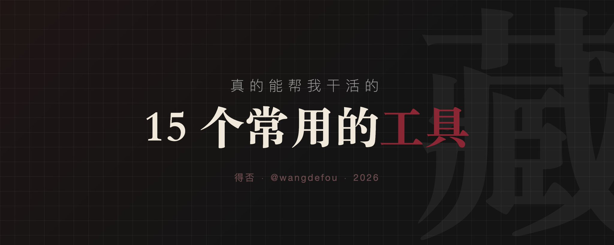

从浏览器收藏夹 200+ 个书签里挑出来 15 个这一年真帮我干了很多事情的工具——不是那种看起来很厉害但从不打开的，是天天用、没了会不舒服的。
🧱 建站基建
1、Cloudflare
域名、DNS、CDN、邮件转发、Pages一家全包，还便宜，还快。
2、Vercel
前端项目一键部署，推一次 git 就上线，适合拖延症。
3、Supabase
后端懒人福音，数据库 + 认证 + 存储，Postgres 底子。
4、Resend
发邮件的，API 设计极度舒服，免费额度够独立开发者用。
📊 SEO 三件套
5、Ahrefs Backlink Checker
看任何网站的反链，免费版够用。
6、Google Trends
做选题、找关键词必开。
7、SEO.box
哥飞做的 SEO 工具箱，关键词、域名、外链一把梭。
💳 收款
8、Stripe
海外收款唯一解，别想别的。
9、Garna / Balance
Stripe 到手之后怎么到自己账户，用这俩。
🤖 AI 开发
10、OpenRouter
一个 key 调所有模型。
11、ZenMux
最近用得最多的 API 聚合，Gemini 图像生成特别香。
12、Groq
推理快到离谱，免费额度大。
🎨 小而美
13、Svgl
下载全网品牌 SVG logo。
14、Excalidraw
画架构图的时候打开，手绘感没对手。
15、Favicon.im
秒拿任意网站的 favicon，写导航站、做截图必备。
收藏夹是一个人的工作流快照。你常年钉在书签栏的，才是真的生产力。别再让那些好用的工具躺着吃灰了，赶紧用起来。
🔧 每个工具的使用提示
Cloudflare
Vercel
Supabase
Resend
Ahrefs Backlink Checker
Google Trends
SEO.box
Stripe
Garna / Balance
OpenRouter
ZenMux
Groq
Svgl
Excalidraw
Favicon.im
📅 发布时间：2026-05-11

ブラウザのブックマーク200以上から厳選した、毎日使う・ないと困る15のツール。
🧱 サイト構築インフラ
1. Cloudflare
ドメイン、DNS、CDN、メール転送、Pagesを一手にカバー。安くて速い。
2. Vercel
フロントエンドプロジェクトをワンクリックデプロイ。git pushするだけで公開完了。
3. Supabase
バックエンドの救世主。データベース＋認証＋ストレージ、Postgresベース。
4. Resend
メール送信サービス。API設計が非常に快適、無料枠で独立系開発者には十分。
📊 SEO 3点セット
5. Ahrefs Backlink Checker
どんなサイトの被リンクも確認可。無料版で十分。
6. Google Trends
企画立案、キーワード調査に必須。
7. SEO.box
哥飛（Gē Fēi）作のSEOツールボックス。キーワード、ドメイン、被リンクを一括管理。
💳 決済
8. Stripe
海外決済の唯一解。他は考える必要なし。
9. Garna / Balance
Stripeで受け取ったお金を自分の口座に移すのに使う。
🤖 AI開発
10. OpenRouter
一つのAPIキーで全モデルを利用可能。
11. ZenMux
最近最も使っているAPI集約サービス。Geminiの画像生成が特に優秀。
12. Groq
推論速度が驚異的に速く、無料枠も大きい。
🎨 小さいけど優秀
13. Svgl
世界中のブランドSVGロゴをダウンロード。
14. Excalidraw
アーキテクチャ図を描く時に開く。手描き感で敵なし。
15. Favicon.im
任意サイトのfaviconを即座に取得。ナビサイト作成やスクリーンショットに必須。
ブックマークはその人のワークフローのスナップショット。常に使っているものこそが本当の生産性。
📅 公開日：2026-05-11